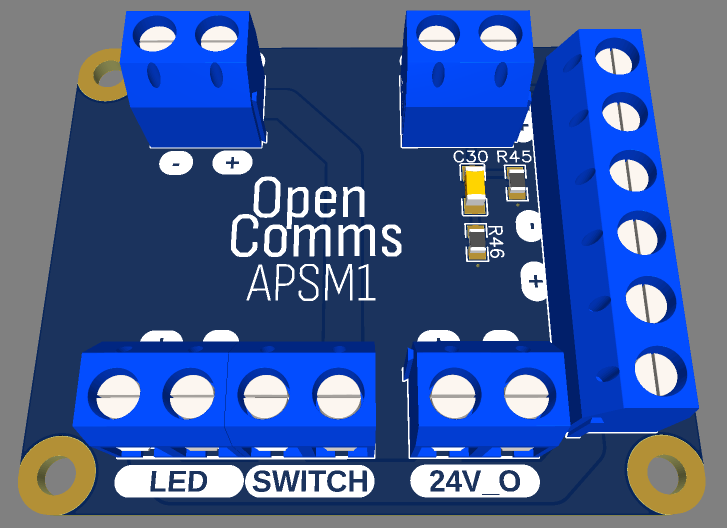
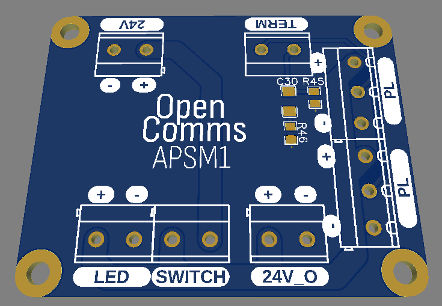

APSM1 (Analog power supply module 1)
The APSM1 is a customizable power supply module for analog partyline communication systems. APSM1 serves as a valuable resource for hobbyists seeking to build their own partyline power supply units.
Concept
The APSM1 was designed for simplicity and modularity. It's a very simple breakout module with integrated line terminaison. The APSM1 module serves as a starting point for someone looking to build their own patyline power supply
The module is composed of:
- One DC input (
24v-30v) - One button connector (with LED output)
- One switched DC output
- Two partline outputs (same line, just two outputs to split power)
GND,DC,Partyline - Switchable terminaison circuit (
Signal -- 200ohm --||-- GNDandSignal -- 2.2k -- GND)
PCB & Schematics
 
Cost
The overall cost of this device is very low.
Here is an simplified BOM:
| What | Bought were | Cost | Quantity | Comment |
|---|---|---|---|---|
| PCB | JLCPCB | 3.62eur | 5 | |
| Parts | Anywhere | few cents | 5 | |
| Screw terminals | Anywhere | few euros | 5 |
Note that some of the part here can be salvaged or found for way cheaper, which will bring the cost down even more